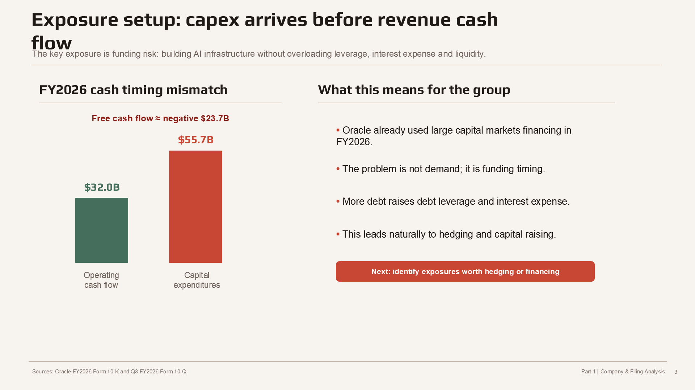
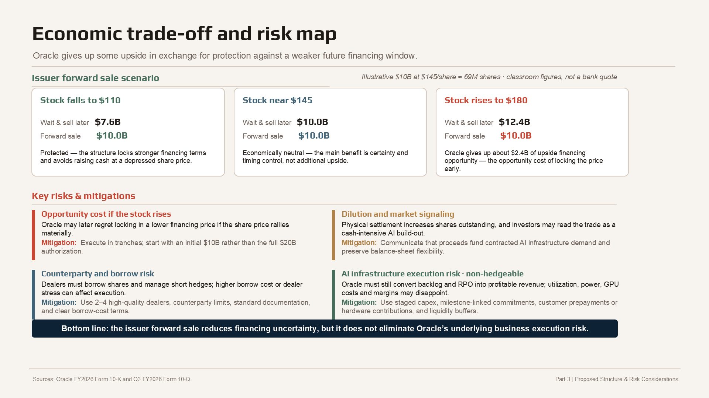

Research Question 研究问题
The case asks how a large technology company should finance an AI infrastructure build-out when demand visibility is strong but cash conversion is delayed. I focused on Oracle because the latest filings show fast cloud demand, very large RPO, and a sharp increase in capital expenditures. The corporate-finance question becomes: how can Oracle reduce the risk of needing to issue equity or debt later under worse market conditions? 这个 case 的问题是：当 AI 基建需求很强但现金回收滞后时，一家大型科技公司应该如何安排融资和风险管理？我选择 Oracle，是因为其最新 filings 显示云业务需求增长很快、RPO 很大，同时资本开支大幅上升。公司金融层面的核心问题是：Oracle 如何降低未来在更差市场环境中被迫融资的风险？
Data and Setup 数据和背景
I used the project slides' filing-based figures to separate visible demand from near-term cash needs. The numbers point in the same direction: Oracle has contracted demand, but the infrastructure must be funded before that demand fully turns into cash flow. 我用 slides 中基于 filings 的数字，把“可见需求”和“近期现金需求”拆开看。数字指向同一个结论：Oracle 的 contracted demand 很强，但基础设施需要在这些需求完全转化为现金流之前先被融资。
| Metric | Figure | Interpretation |
|---|---|---|
| Q3 FY2026 revenue | $17.2B, +22% YoY | Growth is visible, especially in cloud and software. |
| Q3 cloud and software | $15.0B, 88% of revenue | Cloud and software are now the core business engine. |
| FY2026 year-end RPO | $638B | Large contracted demand, but not immediate cash. |
| FY2026 operating cash flow vs capex | $32.0B vs $55.7B | The gap implies roughly negative $23.7B free cash flow. |
| Total borrowings | $134.6B as of Feb. 2026 | More debt financing raises leverage and interest-expense sensitivity. |

Exposure Mapping 风险暴露拆解
I separated the case into three exposures. The binding one is not FX or a single market variable; it is liquidity and financing risk created by capex timing. Interest-rate and FX hedges are still useful, but they support the main financing plan rather than replace it. 我把这个 case 拆成三类风险暴露。真正的核心不是外汇，也不是单一市场变量，而是由 capex timing 造成的流动性和融资风险。利率和 FX hedge 有价值，但它们是辅助主融资方案，而不是替代主方案。
| Exposure | Evidence | Risk-management implication |
|---|---|---|
| Liquidity / capex risk | $39.2B capex in first nine months FY26; +223% vs prior year | Requires capital raising and liquidity planning, not just a derivative overlay. |
| Interest-rate risk | $23B maturities due within three years; +50 bps on $23B ≈ $115M annual cost | Rate locks can cap the cost of planned debt issuance or refinancing. |
| FX risk | 34% of revenue outside the Americas; 10% FX depreciation sensitivity | Rolling forwards can reduce near-term transaction exposure. |
Recommended Structure 推荐结构
The recommended trade is a $10B issuer forward sale inside Oracle's existing $20B ATM equity program. Oracle locks the future equity issuance price now, but cash receipt and share dilution happen later when funding is actually needed. That timing is the whole point of the structure. 推荐方案是在 Oracle 现有 $20B ATM equity program 内先做 $10B issuer forward sale。Oracle 现在锁定未来股权融资价格，但现金到账和股本摊薄可以推迟到真正需要资金时发生。这个时间错配的处理就是结构的核心价值。
| Step | What happens | Why it matters |
|---|---|---|
| Trade date | Oracle signs the forward and locks a financing price. | No immediate cash and no immediate new-share issuance. |
| Forward period | Dealer manages the hedge while Oracle waits for capex funding needs. | Separates price certainty from cash timing. |
| Settlement | Oracle issues shares and receives cash. | Dilution happens when funding is needed, not at trade date. |
I would pair the issuer forward with a rate lock on roughly 70% of planned debt and rolling FX forwards on about 50-70% of relevant near-term FX exposure. The derivative package is therefore layered: equity financing window first, interest-rate cost second, FX transaction exposure third. 我会把 issuer forward 和两个 overlay 配套：对约 70% 的计划债务融资做 rate lock，对约 50-70% 的近期 FX exposure 做 rolling forwards。因此整个方案是分层的：第一层锁定股权融资窗口，第二层控制利率成本，第三层覆盖外汇交易风险。
Scenario Economics 情景收益逻辑
The structure is easiest to understand through three stock-price scenarios. If the stock falls before settlement, the forward protects Oracle because it avoids issuing equity at the depressed price. If the stock stays near the forward price, the result is close to neutral. If the stock rises sharply, Oracle gives up the chance to issue later at a higher price. 这个结构可以用三个股价情景理解。如果结算前股价下跌，forward 保护 Oracle，因为公司不用在低价时被动发股融资。如果股价接近 forward price，经济效果接近中性。如果股价大幅上涨，Oracle 会放弃之后以更高价格融资的机会。

Residual Risks 剩余风险
A good hedge should be clear about what it cannot hedge. The issuer forward reduces future financing-price uncertainty, but it does not make the AI infrastructure investment profitable. Oracle still has to convert backlog and RPO into high-margin revenue. 一个好的 hedge 必须讲清楚它不能对冲什么。issuer forward 降低的是未来融资价格不确定性，但它不能保证 AI 基建投资最终盈利。Oracle 仍然要把 backlog 和 RPO 转化成高利润收入。
| Risk | Why it remains | Mitigation |
|---|---|---|
| Opportunity cost | Oracle gives up upside if the share price rallies materially. | Execute in tranches instead of locking the full authorization. |
| Dilution and signaling | Physical settlement still creates new shares and may signal heavy funding needs. | Frame proceeds as funding for contracted AI infrastructure demand. |
| Counterparty and borrow risk | Dealers must manage stock borrow and hedge execution. | Use multiple high-quality dealers and clear documentation. |
| AI execution risk | Utilization, margins, power cost and GPU economics may disappoint. | Use staged capex, milestones, customer commitments and liquidity buffers. |
Takeaway 我的理解
My takeaway is that risk management starts with identifying the binding constraint. For Oracle, the constraint is not demand visibility; it is financing timing and balance-sheet flexibility during a capital-intensive AI build-out. The issuer forward is attractive because it matches that exact problem: lock part of the future funding price now, receive the cash later, and keep the company from being forced into a weaker future market window. 我的主要收获是，风险管理要先找到真正的 binding constraint。对 Oracle 来说，问题不是需求是否存在，而是在资本密集型 AI 扩张中如何处理融资 timing 和资产负债表灵活性。issuer forward 的吸引力就在于它精准匹配这个问题：现在锁定一部分未来融资价格，之后在需要资金时再收现金，避免公司被迫进入更弱的未来融资窗口。